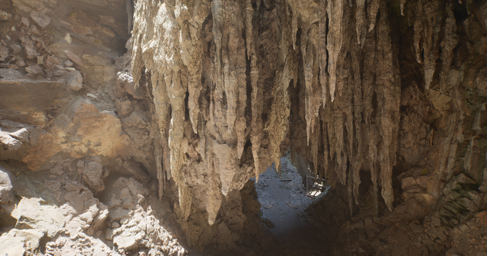

Milestone

Figure 1a: Our world-space SDF at resolution \(256 \times 256 \times 256\).

Figure 1b: UE5 Mesh SDF with resolution \(56 \times 49 \times 56\).
Milestone
Jasper Liu, Zihan Liao, Junming Chen, Jinglun Zhang
"Real-time global illumination has always been a holy grail of computer graphics."
Lumen is a dynamic global illumination and reflections system implemented in Unreal Engine (UE) 5. Lumen Global Illumination solves diffuse indirect lighting. For example, light bouncing diffusely off a surface picks up the color of that surface and reflects the colored light onto other nearby surfaces, creating an effect called color bleed. Meshes in scenes also block indirect lighting, which also produces indirect shadowing. The magic of Lumen is its ability to simulate infinite diffuse bounces in real time. In this project, we aim to explore how Lumen realizes real-time global illumination and improve the rendering efficiency without compromising too many visual effects.
Lumen is a dynamic global illumination and reflections system implemented in Unreal Engine (UE) 5. Lumen Global Illumination solves diffuse indirect lighting. In this final project, we aim to explore and implement the core and essential idea behind Lumen. Ignoring the complex engineering and framework limitations, we want to build a global illumination renderer that traces the ray to collect direct light, but uses a Radiosity-based method for accumulating indirect light as Lumen does. Our goal is to achieve an amazing global illumination quality faster in a real-time rendering fashion.
In general, the difficulty of real-time global illumination lies in solving the rendering equation:
By discretizing the equation and breaking the continuous surface into surface elements, we are able to reach the following linear equations:
where \( B_i(u) \) represents the radiance of the \( i \)-th surface element at direction \( v \), \( B_{e,i} \) is the emission from the \( i \)-th surface element.
Now the question is how to efficiently solve this linear equation. One way is to use Gaussian elimination, but the time complexity goes up in cubic order with respect to the number of surface elements.
Lumen incorporates two new ideas: surface and radiance cache. They sample and store some radiance \( B_i(v) \) of the \( i \)-th surface element and the corresponding material information at the \( t \)-th time step, and use them to update the \( B \)s at the \( t+1 \)-th time step.
This method relies on one condition to converge quickly and accurately to the true global illumination solution: the radiance of the \( i+1 \)-th surface element at the \( t \)-th time step does not differ significantly from itself at the \( t+1 \)-th time step. And this condition is generally true in scenarios where real-time rendering is needed.
While the previously introduced equation provides the theoretical foundation for real-time global illumination, our implementation experience reveals that the core strength of Unreal Engine 5's Lumen system lies primarily in its engineering design. Several key challenges must be addressed to enable practical performance, among which the first is:
Lumen addresses this challenge by casting a set of rays from each surface element. For the \( i \)-th surface element, rays are cast to identify contributing \( B_j^t \) values, compute the associated form factors \( F_{ij} \), and update \( B_i^{t+1} \). This strategy effectively approximates the full summation by randomly sampling a subset of contributing elements rather than exhaustively iterating over all possible surface pairs. Given infinite parallelism, this approach reduces the complexity to \( O(\text{rays} \times O(\text{ray-surface intersection})) \).
The second engineering challenge is as follows:
To overcome this, Lumen avoids direct ray-triangle intersection and instead employs ray marching accelerated by signed distance fields (SDFs), which are significantly more GPU-friendly.
We began by implementing a world-space SDF using a 3D texture that encapsulates the entire scene’s bounding box, with a resolution of \( 256 \times 256 \times 256 \). The SDF is computed and updated in real time using the Jump Flooding Algorithm (JFA). The result of this initial implementation is illustrated in Figure 1.
However, this implementation exhibits several limitations. Achieving adequate geometric detail necessitates high-resolution SDFs, yet JFA only provides an approximation, which introduces imprecision at finer resolutions. As shown in Figure 1, some voxels remain incorrectly updated, resulting in noticeable artifacts (e.g., white pixels indicating rays that fail to intersect geometry). Furthermore, the performance is suboptimal; rendering the hit point lengths at this resolution yields only ~25 FPS.
Upon reviewing documentation and visuals from Unreal Engine 5, we identified Figure 1b, which shows a mesh SDF implementation with a much lower resolution of \(56 \times 49 \times 56\). This observation led us to hypothesize that Lumen maintains a separate SDF for each mesh, computed in the object space and covering only the mesh’s bounding volume. During ray marching, the bounding box of the mesh is first intersected, and marching proceeds in object space to find the hit point on the mesh surface. This insight is consistent with Lumen’s use of the term Mesh Distance Field.
Based on this understanding, we implemented mesh-space SDFs. Each mesh maintains its own distance field within object space. This revision significantly improved both accuracy and performance, achieving approximately 160 FPS. The result is shown in Figure 2. Minor visual artifacts, such as aliasing, are attributable to the lack of trilinear filtering in our SDF sampling.
Having established a method to compute surface-ray intersections via signed distance field (SDF) ray marching, we encounter the third key challenge:
An initial idea was to allocate a texture with the same resolution as the mesh’s SDF to store surface properties. However, this approach quickly proved impractical. The primary reason is that the discretized rendering equation assumes a purely diffuse scene, wherein only radiosity must be stored. For more complex materials—such as mirrors—radiance samples over the hemisphere must be retained. For instance, if each surface element casts 64 rays to sample hemispherical radiance, and each sample stores a direction (3 floats), probability (1 float), and value (3 floats), this results in 1792 bytes per surface element. Given Lumen's maximum supported SDF resolution of \(128 \times 128 \times 128\), the total memory requirement would exceed 3.5 GB per object, which is prohibitively large.
Figure 3, sourced from the official Unreal Engine documentation, reveals Lumen’s approach to mitigating this storage overhead. The key observation is that the axis-aligned bounding box of a mesh typically contains substantial regions of empty space that do not correspond to the actual surface and thus need not be cached.
To avoid caching this non-surface volume, Lumen introduces the concept of Cards. A card is a spatial cuboid that is discretized to store surface data. A given mesh is decomposed into multiple cards, each capturing a portion of its surface. This subdivision reduces the amount of unused space represented in the cache. However, it introduces an additional lookup cost—during ray intersection, one must identify the specific card containing the hit point to access the corresponding surface data. In the limiting case where a mesh uses a single card, the scheme degenerates into a full-object-space cache with resolution equal to that of the SDF. Thus, the number of cards offers a tunable tradeoff between memory efficiency and access performance.
To enable card-based caching, we implemented a mesh decomposition strategy using the K-Means clustering algorithm to partition the surface point cloud into a specified number of clusters (equal to the number of desired cards). For each cluster, we computed an oriented bounding box (OBB) using principal component analysis (PCA). The resulting card structure is visualized in Figure 4a. In parallel, we also implemented trilinear interpolation for SDF sampling to improve ray-marching precision.
Following card generation, we implemented a surface normal cache. This cache stores the normal vectors corresponding to the discretized surface points within each card. A visualization of the resulting normals is provided in Figure 4b. The visualization frame rate is now about 80 fps.
Our subsequent development efforts will focus on the following objectives: